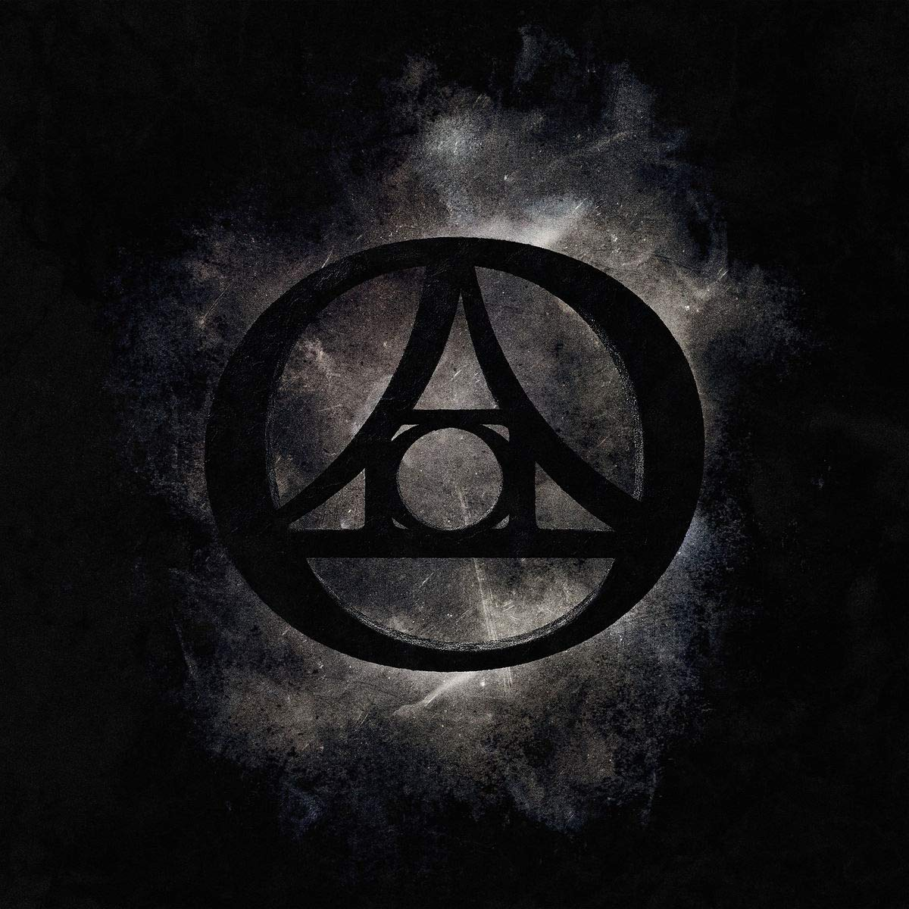

La banda, que ha estado trabajando en el disco durante los meses de pandemia, pretende
recuperar el espíritu festivo de los trabajos anteriores a "Ira Dei". Tendremos nuevo disco de
Mägo de Oz el próximo 9 de abril de
2021. Se llama Bandera Negra y el grupo lo ha estado grabando en secreto en plena
pandemia.
Rock
Lanzamiento

The Agonist anuncia nuevo álbum, ‘Orphans’
‘Orphans’ es el sexto álbum de estudio de la banda originaria de
Quebéc y el tercero con la
vocalista griega Vicky Psarakis, prometiendo el álbum más melódico y extremo de su carrera,
pasando del Metalcora al Brutal Death Metal.
Metal
Lanzamiento
¡Fuertes declaraciones de Vicky Psarakis, vocalista de The Agonist!
Vicky Psarakis, ha sorprendido con las declaraciones en las que pone
el punto de mira
directamente en su antecesora, primero asegurando que habría tratado de impedir que su nuevo
disco, titulado ‘Orphans’ , viera la luz, y más tarde con la dura afirmación que encabeza esta
noticia.
Metal
Polemica
¿Conoces a las mujeres más sexys en el ámbito del Metal?
Las chicas que te mencionaremos a continuación se abrieron camino, en un mundo que al parecer
estaba creado solo para hombres, impusieron moda, estilo y marcaron la diferencia, por eso no
solo fue inspiración de muchos muchachos de las época si no también, de las muchachas que
escuchaban su música y seguían sus estilos tan particulares.
Metal
Ranking
Las 10 más polémicas peleas y rupturas de las bandas de rock
Hay bandas que han marcado épocas, pero muchas de ellas lo han hecho
no solo por el talento y
su música: algunas han experimentado diferencias irreconciliables y que posteriormente, han
conducido a polémicas separaciones.
La afamada revista Rolling Stone seleccionó las 10 bandas cuyas rupturas han resultado más
traumáticas, ya sea por su sorpresiva separación o por la magnitud de las peleas que llevaron a
su alejamiento.